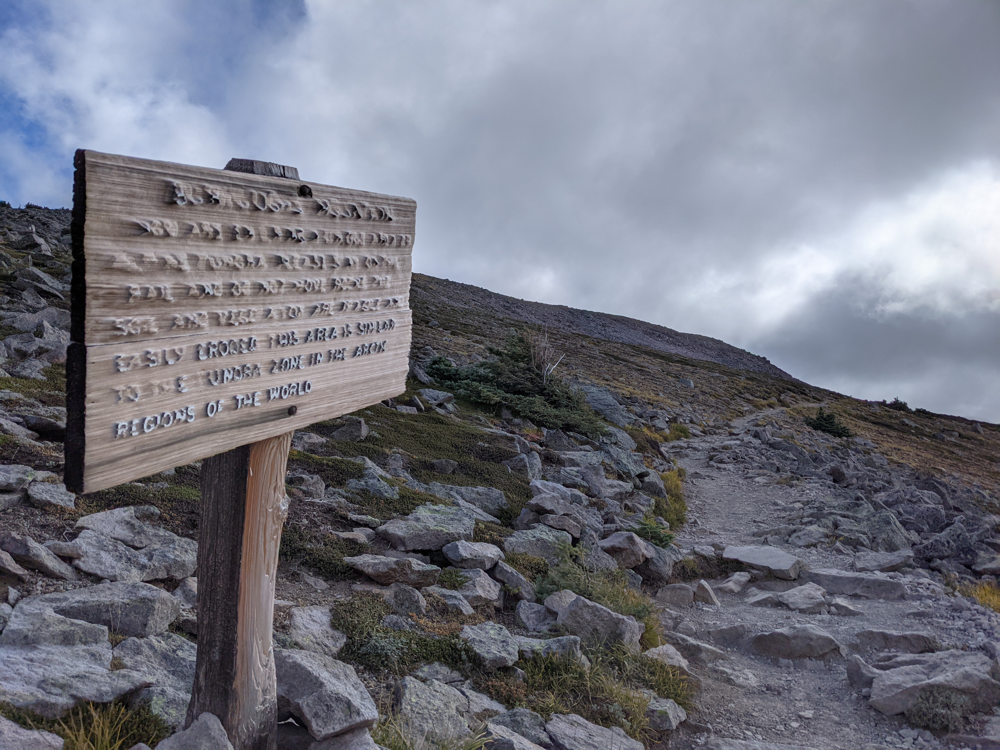

Tundra sign with lots of erosion
This sign tells people about tundra. On the other side of the hill, where there is a lot less wind, there is a sign with the same words that has not been eroded.
The sign says:
Burroughs Mountain
You are entering a unique area of alpine tundra. Please stay on the trail and do not move rocks. The soil and vegetation are fragile and easily eroded. This area is similar to the tundra zone in the arctic regions of the world.